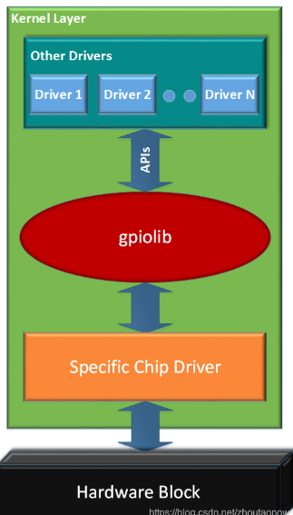

08 GPIO子系统
GPIO子系统
GPIO子系统是 Linux 内核中用于管理和控制通用输入/输出引脚的核心框架，它为开发者提供了统一的接口来操作硬件上的 GPIO 引脚，使用前需要用pinctrl将该引脚的复用配置成GPIO
驱动架构
GPIO子系统的驱动同样遵循着“主机驱动和设备驱动分离”和“驱动分层”的思想，分为主机驱动层、核心层、设备驱动层
主机驱动层
主机（GPIO控制器）驱动一般由原厂提供，且也作为设备树中的一个节点
SoC内部对于GPIO一般都有专门的控制器外设，它直接位于SoC的内存空间，通过配置该外设的寄存器，从而控制某个具体的GPIO
1 | /{ |
核心层
核心层向下为主机端驱动提供了注册GPIO控制器的API；向上给设备驱动层提供了控制GPIO的API
内核对于GPIO的操作有2套API：
gpio_*：用GPIO编号（int变量）描述一个GPIO（正逐步移除）gpiod_*：用struct gpio_desc描述一个GPIO
| 功能 | 旧版 API (gpio_*) |
新版 API (gpiod_*) |
|---|---|---|
| 申请 GPIO | gpio_request() |
gpiod_get() |
| 释放 GPIO | gpio_free() |
gpiod_put() |
| 设置方向 | gpio_direction_input() |
gpiod_direction_input() |
| 读写电平 | gpio_get/set_value() |
gpiod_get/set_value() |
| 中断绑定 | gpio_to_irq() |
gpiod_to_irq() |
| 依赖头文件 | <linux/gpio.h> |
<linux/gpio/consumer.h> |
申请单个GPIO
1.旧版API：需要手动指定gpio编号或者从设备树中读取
1 | // 从设备树中获取GPIO编号 |
2.新版API(1)
1 | struct gpio_desc *gpiod_get(struct device *dev, const char *con_id, enum gpiod_flags flags); |
- 如果
con_id为NULL，直接查找gpios属性 - 如果
con_id非NULL，查找"<con_id>-gpios"属性（如"led-gpios"）
新版API(2)
1 | struct gpio_desc *gpiod_get_from_of_node( |
新版
gpiod*的API在早期内核比如4.1.15适配还不是很好，没调成功
设备驱动层
设备驱动层要用在设备树中加入GPIO属性，举个例子
1 | beep { |
与GPIO子系统相关的属性为beep-gpio = <&gpio5 1 GPIO_ACTIVE_LOW>;一般遵循以下格式：
1 | gpio-name = <&gpio_controller pin_number flags> |
调试
1.ls /sys/class/gpio可以看本机的gpio控制器的信息，后面的数字代表该控制器的基号
1 | export gpiochip128 gpiochip64 unexport |
gpiochipX目录的结构如下：
1 | /sys/devices/platform/soc/2000000.aipsbus/20a4000.gpio/gpio/gpiochip64$:ls |
- ngpio：该控制器所含的引脚数量
- base：该控制器的基号：所管理的第一个GPIO引脚在全局GPIO编号空间中的起始偏移量
- 操作GPIO时，需要用其
All articles on this blog are licensed under CC BY-NC-SA 4.0 unless otherwise stated.